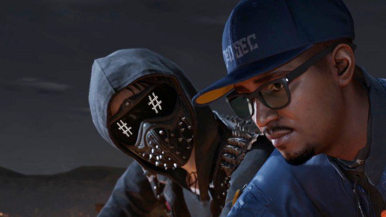
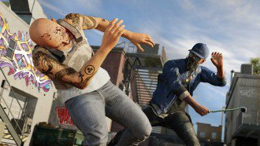
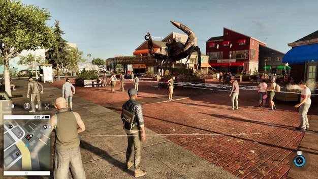
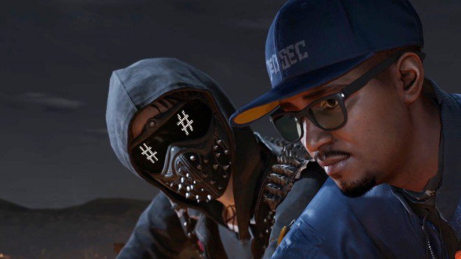
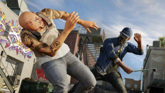
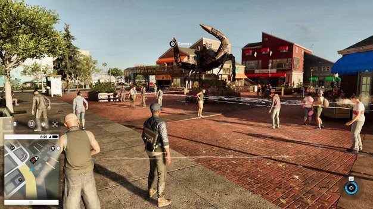

Il nuovo protagonista e' Marcus "Retr0" Holloway. hacker voglioso di entrare a far parte dei DedSec, team composto da Sitara, esperta street artist e praticamente la mente del gruppo, Wrench, tipo mascherato particolarmente strano che comunica i suoi stati d'animo attraverso uno schermo led, Josh, abilissimo hacker dal carattere timido e Horatio, programmatore molto abile dalle diverse abilita'. Il team vuole assolutamente fermare la Blume Corporation, societa' che utilizza il software ctOS 2.0 per carpire le informazioni dalle persone e manipolarne le menti. Il giocatore si trovera' fin da subito ad affrontare un tutorial in cui da un lato e' possibile imparare le meccaniche di base del gioco, mentre dall'altro avra' modo di cancellare il proprio profilo dal ctOS, il quale ha marchiato l'eroe di turno come criminale per fatti non ancora commessi, scelta effettuata a causa del potenziale dell'eroe di turno.
Il DedSec ha quindi messo a punto un'app in grado di farsi conoscere in rete, software sfruttabile per condividere la capacita' computazionale dei vari dispositivi in modo da consentire l'accesso ai server della Blume e rivelare così al mondo gli obiettivi della societa'. Acquisire quindi follower e convincerli a scaricare l'app e' quindi uno dei compiti principale di Marcus, il quale dovra' conquistare seguaci grazie ad azioni di ogni genere.
La trama e la caratterizzazione dei personaggi sono gli aspetti meno convincenti di Watch Dogs 2. Marcus non possiede assolutamente la verve di Aiden e le motivazioni che lo spingono a unirsi al DedSec non sono certo le stesse che hanno portato il vecchio protagonista a trasformarsi in "eroe". A parte per un evento particolarmente importante, il resto dell'avventura e' caratterizzato da una societa' "cattiva" che viene combattuta da un gruppo di ragazzi che agiscono senza rispettare la legge. Inoltre i programmatori non hanno inserito alcun approfondimento legato ai comprimari, se non una veloce presentazione durante le prime battute di gioco.
GAMEPLAY
Dopo aver superato la prima missione, il giocatore si trovera' immerso in un open world in cui sara' necessario non solamente esplorare e affrontare le diverse missioni ad hoc ma, come facilmente prevedibile, saranno presenti diverse attivita' secondarie, sempre varie e in grado praticamente di introdurre nuovi elementi al gameplay. Si passera' quindi da penetrare nelle basi nemiche allo scopo di raccogliere determinati oggetti o informazioni a eliminare minacce legate al traffico di droga e molto altro ancora. Watch Dogs 2 e' affrontabile sia con approccio action che stealth. Inutile pero' negare che sviluppatori abbiano comunque esaltato la seconda tipologia, non solamente inserendo una sorta di visuale tattica in modo da vedere attraverso i muri e quindi studiare sia l'obiettivo che i movimenti dei nemici, ma anche sfruttando ogni dispositivo presente nella location. Marcus puo' quindi trasformare in vere e proprie bombe stordenti tutti gli apparecchi elettronici nel proprio raggio di azione, ma come del resto puo' comandare semafori, far esplodere tombini et similia. Puo' anche attirare verso una trappola i nemici di turno grazie a dei piccoli cortocircuiti, insomma, prendete quanto poteva fare Aiden nel primo capitolo e infoltitelo di diverse possibilita' aggiuntive. E' inoltre possibile contare su due droni, il Jumper e il Quadricottero. Il primo e' dotato di quattro ruote, una molla per effettuare salti e soprattutto in grado di sostituire Marcus negli hack fisici, di conseguenza capitera' di portare a termine una missione senza correre rischi in prima persona. Il secondo si rivela invece molto utile per effettuare ricognizioni, in modo da individuare minacce e capire quali sono i punti deboli da sfruttare a proprio favore. Il Quadricottero permette inoltre di leggere i codici di accesso da remoto, elemento chiave per poter entrare nei diversi sistemi informatici presenti in ogni missione. Sfruttare ogni gadget a disposizione e' l'unica via per portare a termine le missioni. La IA dei nemici risulta effettivamente convincente e difficilmente vi troverete al cospetto di missioni semplici e banali. Farsi scoprire significhera' non solamente vedersi vomitare addosso del sano piombo, ma anche moltiplicare il numero di cattivi presenti sullo schermo. Durante i nostri test abbiamo piu' volte optato per il tentativo di hacking tramite telecamere e sfoltimento dei nemici grazie alle trappole elettriche a disposizione, in modo da avere poi la strada piu' libera possibile. Abbiamo storto il naso durante le nostre prove di approccio completamente action. Oltre alla IA performante e il numero di nemici troppo sbilanciato, non siamo rimasti assolutamente convinti dal sistema di mira e da un equipaggiamento infinitamente inferiore a quello in dotazione ai nemici. Inutile quindi sottolineare che vi troverete a sfruttare angoli bui e atterramenti rapidi per la maggior parte del tempo, a parte in determinate occasioni dove non ci sara' alcuna alternativa possibile.  Spostiamo la nostra attenzione sulla smart city, luogo in cui Marcus passera' diverso tempo a sfruttare il suo sistema informatico, in modo da sfruttare al massimo le proprie potenzialita'. Il protagonista non solo puo' hackerare le auto e rubarle senza far scattare l'antifurto, ma e' anche possibile comandare a distanza le automobili stesse, creando praticamente una strada sempre libera grazie a disturbi che possono essere applicati al traffico. Al contempo, come anticipato sopra, e' possibile interagire con tombini, semafori e molto altro, in modo da toglierci di mezzo fastidiosi inseguitori. Come sicuramente ricorderete, tra gli aspetti negativi dell'episodio originale di Watch Dogs spiccava la presenza di un modello di guida e di una fisica dei veicoli poco convincente. In Watch Dogs 2 possiamo contare ancora una volta su una guida comunque arcade, ma impreziosita da una diversificazione dei modelli delle auto non solamente estetica, ma anche una volta alla guida. Capitera' di avere sensazioni diverse, a seconda classicamente del veicolo messo a disposizione in quel momento, di conseguenza gli sviluppatori sono riusciti a garantire un buon compromesso. La longevita' di gioco non e' solamente garantita dalla presenza di missioni principali e secondarie, ma il giocatore puo' darsi liberamente al giocazzeggio ed esplorare le diverse zone presenti sulla mappa. Marcus puo' essere personalizzato grazie ai diversi negozi di abbigliamento, ma al contempo e' anche possibile pubblicare dei selfie in zone particolari e aumentare così il numero di follower, cosa particolarmente utile per lo scopo finale del gioco. Il telefonino in dotazione a Marcus e' il vero hub del gioco. Grazie allo smartphone e' possibile accettare le missioni e leggerne i dettagli, oppure sfruttare le mappe per attivare il GPS e molto altro ancora.  TECNICA
Il comparto tecnico di Watch Dogs 2 e' sicuramente uno degli aspetti piu' curati dell'intera produzione. Il character design dei protagonisti e' davvero ottimo mentre lo scenario e' in grado di colpire l'attenzione dell'utente grazie a un sistema di illuminazione in grado di non mostrare alcuna sbavatura. Lo stesso plauso va agli effetti visivi e soprattutto alle texture, rifinite in maniera sublime e soprattutto talmente evocative quasi da costringere il giocatore a scattarsi continuamente selfie. Al contempo abbiamo riscontrato qualche calo di frame rate nelle situazioni di maggior concitazione, niente comunque di davvero grave. Quasi certosina e' invece l'attenzione ai dettagli visivi delle auto presenti nel gioco, seppur non sia possibile contare su marche reali. Un vero peccato. Ottimo anche il comparto audio. La colonna sonora ha verve da vendere e il doppiaggio in italiano e' di livello davvero alto. Abbiamo purtroppo notato la presenza di un volume troppo basso dei dialoghi, di conseguenza consigliamo di attivare i sottotitoli, in modo da non perdervi alcuno scambio di battuta.  COMMENTO FINALE
Watch Dogs 2 e' sicuramente un ottimo gioco. Il gameplay risulta profondo e vario, come del resto la qualita' delle missioni sfiora quasi sempre la perfezione. Il giocatore viene spinto inoltre a esplorare ogni singolo angolo della mappa grazie a compiti di ogni genere e soprattutto easter egg evocativi. Tecnicamente validissimo, Watch Dogs 2 propone purtroppo una trama poco convincente e una caratterizzazione dei protagonisti poco curata, senza contare un sistema di mira poco incisivo. Watch Dogs 2 e' comunque un prodotto assolutamente valido, in grado di lasciare alle spalle le diverse critiche emerse durante le analisi del primo capitolo
GAMEPLAY 8
TECNICA 9
LONGEVITA' 8,5
MULTIPLAYER 8
GLOBALE 8,5
Dopo aver superato la prima missione, il giocatore si trovera' immerso in un open world in cui sara' necessario non solamente esplorare e affrontare le diverse missioni ad hoc ma, come facilmente prevedibile, saranno presenti diverse attivita' secondarie, sempre varie e in grado praticamente di introdurre nuovi elementi al gameplay. Si passera' quindi da penetrare nelle basi nemiche allo scopo di raccogliere determinati oggetti o informazioni a eliminare minacce legate al traffico di droga e molto altro ancora. Watch Dogs 2 e' affrontabile sia con approccio action che stealth. Inutile pero' negare che sviluppatori abbiano comunque esaltato la seconda tipologia, non solamente inserendo una sorta di visuale tattica in modo da vedere attraverso i muri e quindi studiare sia l'obiettivo che i movimenti dei nemici, ma anche sfruttando ogni dispositivo presente nella location. Marcus puo' quindi trasformare in vere e proprie bombe stordenti tutti gli apparecchi elettronici nel proprio raggio di azione, ma come del resto puo' comandare semafori, far esplodere tombini et similia. Puo' anche attirare verso una trappola i nemici di turno grazie a dei piccoli cortocircuiti, insomma, prendete quanto poteva fare Aiden nel primo capitolo e infoltitelo di diverse possibilita' aggiuntive. E' inoltre possibile contare su due droni, il Jumper e il Quadricottero. Il primo e' dotato di quattro ruote, una molla per effettuare salti e soprattutto in grado di sostituire Marcus negli hack fisici, di conseguenza capitera' di portare a termine una missione senza correre rischi in prima persona. Il secondo si rivela invece molto utile per effettuare ricognizioni, in modo da individuare minacce e capire quali sono i punti deboli da sfruttare a proprio favore. Il Quadricottero permette inoltre di leggere i codici di accesso da remoto, elemento chiave per poter entrare nei diversi sistemi informatici presenti in ogni missione. Sfruttare ogni gadget a disposizione e' l'unica via per portare a termine le missioni. La IA dei nemici risulta effettivamente convincente e difficilmente vi troverete al cospetto di missioni semplici e banali. Farsi scoprire significhera' non solamente vedersi vomitare addosso del sano piombo, ma anche moltiplicare il numero di cattivi presenti sullo schermo. Durante i nostri test abbiamo piu' volte optato per il tentativo di hacking tramite telecamere e sfoltimento dei nemici grazie alle trappole elettriche a disposizione, in modo da avere poi la strada piu' libera possibile. Abbiamo storto il naso durante le nostre prove di approccio completamente action. Oltre alla IA performante e il numero di nemici troppo sbilanciato, non siamo rimasti assolutamente convinti dal sistema di mira e da un equipaggiamento infinitamente inferiore a quello in dotazione ai nemici. Inutile quindi sottolineare che vi troverete a sfruttare angoli bui e atterramenti rapidi per la maggior parte del tempo, a parte in determinate occasioni dove non ci sara' alcuna alternativa possibile.  Spostiamo la nostra attenzione sulla smart city, luogo in cui Marcus passera' diverso tempo a sfruttare il suo sistema informatico, in modo da sfruttare al massimo le proprie potenzialita'. Il protagonista non solo puo' hackerare le auto e rubarle senza far scattare l'antifurto, ma e' anche possibile comandare a distanza le automobili stesse, creando praticamente una strada sempre libera grazie a disturbi che possono essere applicati al traffico. Al contempo, come anticipato sopra, e' possibile interagire con tombini, semafori e molto altro, in modo da toglierci di mezzo fastidiosi inseguitori. Come sicuramente ricorderete, tra gli aspetti negativi dell'episodio originale di Watch Dogs spiccava la presenza di un modello di guida e di una fisica dei veicoli poco convincente. In Watch Dogs 2 possiamo contare ancora una volta su una guida comunque arcade, ma impreziosita da una diversificazione dei modelli delle auto non solamente estetica, ma anche una volta alla guida. Capitera' di avere sensazioni diverse, a seconda classicamente del veicolo messo a disposizione in quel momento, di conseguenza gli sviluppatori sono riusciti a garantire un buon compromesso. La longevita' di gioco non e' solamente garantita dalla presenza di missioni principali e secondarie, ma il giocatore puo' darsi liberamente al giocazzeggio ed esplorare le diverse zone presenti sulla mappa. Marcus puo' essere personalizzato grazie ai diversi negozi di abbigliamento, ma al contempo e' anche possibile pubblicare dei selfie in zone particolari e aumentare così il numero di follower, cosa particolarmente utile per lo scopo finale del gioco. Il telefonino in dotazione a Marcus e' il vero hub del gioco. Grazie allo smartphone e' possibile accettare le missioni e leggerne i dettagli, oppure sfruttare le mappe per attivare il GPS e molto altro ancora.  TECNICA
Il comparto tecnico di Watch Dogs 2 e' sicuramente uno degli aspetti piu' curati dell'intera produzione. Il character design dei protagonisti e' davvero ottimo mentre lo scenario e' in grado di colpire l'attenzione dell'utente grazie a un sistema di illuminazione in grado di non mostrare alcuna sbavatura. Lo stesso plauso va agli effetti visivi e soprattutto alle texture, rifinite in maniera sublime e soprattutto talmente evocative quasi da costringere il giocatore a scattarsi continuamente selfie. Al contempo abbiamo riscontrato qualche calo di frame rate nelle situazioni di maggior concitazione, niente comunque di davvero grave. Quasi certosina e' invece l'attenzione ai dettagli visivi delle auto presenti nel gioco, seppur non sia possibile contare su marche reali. Un vero peccato. Ottimo anche il comparto audio. La colonna sonora ha verve da vendere e il doppiaggio in italiano e' di livello davvero alto. Abbiamo purtroppo notato la presenza di un volume troppo basso dei dialoghi, di conseguenza consigliamo di attivare i sottotitoli, in modo da non perdervi alcuno scambio di battuta.  COMMENTO FINALE
Watch Dogs 2 e' sicuramente un ottimo gioco. Il gameplay risulta profondo e vario, come del resto la qualita' delle missioni sfiora quasi sempre la perfezione. Il giocatore viene spinto inoltre a esplorare ogni singolo angolo della mappa grazie a compiti di ogni genere e soprattutto easter egg evocativi. Tecnicamente validissimo, Watch Dogs 2 propone purtroppo una trama poco convincente e una caratterizzazione dei protagonisti poco curata, senza contare un sistema di mira poco incisivo. Watch Dogs 2 e' comunque un prodotto assolutamente valido, in grado di lasciare alle spalle le diverse critiche emerse durante le analisi del primo capitolo
GAMEPLAY 8
TECNICA 9
LONGEVITA' 8,5
MULTIPLAYER 8
GLOBALE 8,5